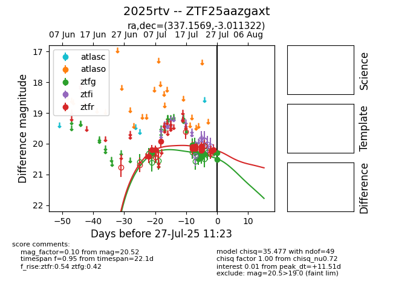

Target 2025rtv at 2025-07-27 11:23, see:
FINK: fink-portal.org/2025rtv
Lasair: lasair-ztf.lsst.ac.uk/objects/2025rtv
ALeRCE: alerce.online/object/2025rtv
TNS: wis-tns.org/object/2025rtv
YSE: ziggy.ucolick.org/yse/transient_detail/2025rtv
alt names
ZTF25aazgaxt (ztf,fink)
2025rtv (tns,yse)
coordinates:
equatorial (ra, dec) = (337.1569,-3.01132)
galactic (l, b) = (61.9307,-48.21732)
photometry
last ztfg=20.52, ztfr=20.19
13 ztfg, 14 ztfr detections
